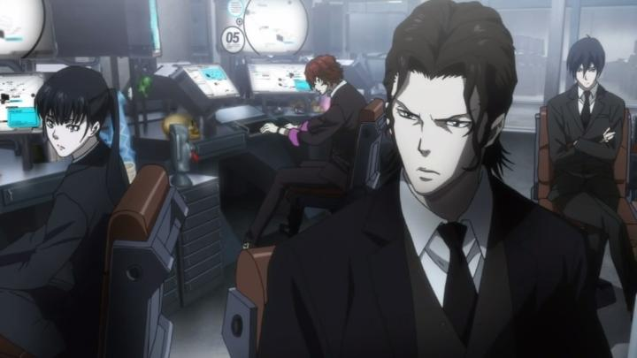

Fairly soon after the success of "Psycho-Pass" in 2012, a second season (titled "Psycho-Pass 2") aired in 2014. However, it had a new production team (Tatsunoko Production instead of Production I.G, although I.G would return for subsequent entries in the franchise), and a new lead writer in Tow Ubukata, fresh off the success of the "Mardock Scramble" movies. That's a lot of changes, especially regarding the replacement of popular writer Gen Urobuchi (who is still credited with supervision), and Ubukata's popularity would decrease shortly after due to his personal life, which I won't get into. And notably, the new season seemed to get negative reviews upon its release. All of which make reviewing it separately an interesting exercise. Taking place more than a year after the first season, it picks up largely with the same state as that last episode (and with many references, watching the first season is essential before starting here). Akane is still the lead investigator of the Unit 1 police force in a future Japan regulated by the Sybil System, able to read the colour (or "psycho-pass") of a person's mental state to subdue them before a crime occurs. Akane has hardened a little, but still maintains a clear mind with a strong sense of justice. Due to the events of the first season, some characters are missing, and new characters have joined the force, including a new junior investigator with now a year of experience, each with varying degrees of trustworthiness. At only 11 episodes, this is effectively a new "arc" equal in length as the second half of the first season. Like that, it focuses entirely on the plot of a single ambitious terrorist that can walk freely without being picked up by Sybil's scanners, and therefore, can't be judged with his crimes. At this time, legal medications to help regulate and reduce a person's crime coefficient is now trending (akin to numbing a person's emotions), and the terrorist is able to make potent subscriptions, further complicating the system's effectiveness. Along with this new enemy, one of Akane's new enforcers (a latent criminal cooperating to work with the police) has a hidden history that might pose a danger to those around him. Even more than the first season, Akane's stability will be tested. The decision to completely forego the episodic stand-alone cases of the first season is a little disappointing. Shows like that are able to freely apply new ideas in standalone short stories, and it was particularly effective in the first season to portray the world of "Psycho-Pass." Centering around the new primarily villain is also a risky move, as this one isn't as traditionally charismatic as the big bad guy from the first season. There are still some traits that make the new villain interesting - in yet another comparison to "Ghost in the Shell," they reminded me a bit of the big bad from the first season of "Stand Alone Complex." Their methods and motivations are consistent and intriguing: to test and stress the Sybil System by having innocent people commit crimes, knowingly and unknowingly, to see if and how they would be judged. The nature of the planned crimes result in a lot of deaths. While not as grotesquely gory as the first season, they are plentiful, and at times the body-count and victims are almost ludicrous - that's the terrorist's point. This applies to one of the major problems of "Season 2": it's far more cynical. While some of the new characters prove trustworthy and useful, many of Akane's new allies, specifically those who weren't with her during the events of the first season, seem to be working against her. Rather than a conspiracy or clever plot, most of them just don't like her or her methods. This is most evident in junior inspector Mika, a cop that follows protocol by the book, and doesn't like how Akane stretches the rules to bring in criminals alive rather than killing them when their Dominator guns say they should. Mika goes so far as to file detailed reports (both to Akane as her superior, and behind her back to higher levels) requesting that Akane change or be demoted, citing examples where Akane's methods have caused problems. Except... every instance of Akane's actions prove that she is by far the best cop in the force, while Mika inability to think for herself frequently shows how inept she is. But even then, Mika fails to see any issue with her own actions or inaction, despite the outcome. There is a story-purpose to her character, but Mika's just really unlikable. Many new allies who hate Akane are. But while most of them get satisfying payback against them, Mika seems to get away without consequence, despite the audience desparately wanting to see that consequence for several reasons.  Poor Akane seems to get put through the ringer here, even if only slightly worse than what she's already gone through in the first season. New characters close to her are introduced purely to have victim to target, which seems unfairly cruel. This season does address one of the franchises mysteries: how is it that Akane can keep a clear mind despite the carnage around her? But instead of labelling her as asymptomatic (as introduced as possible in season one), or providing another reason, the case is still left open, with us left to assume she's simply pure of heart. That's too simple for "Psycho-Pass," and one has to assume the show would eventually conclude with this being addressed more directly. Desptie the "likability" problem of the cast and the cynical nature of the scenarios, I admit the writing holds up well, in some ways better than the first season. While the tone of the first season's writing felt conflicting (at times childishly simple), "Psycho-Pass 2" feels more consistently mature. There are more twists and mysteries than the first season had, and each of them felt more satisfyingly intriguing than the big twist the first season relied on. And the climax's resolution is clever, even if I had qualms on certain parts of the ending. Overall, the plot makes for a solid sci-fi crime thriller worthy of the franchise. While the visual design is a little less amibitous than Season 1, "Psycho-Pass 2" still looks appropriately solid, even with slightly better overall animation than the first season (I attribute this sense to not spending much time in the sterile office, and creative direction to add flourishes to animation during conversations). The sound design and soundtrack are still great, and Funimation's dub is still solid, with Christopher Sabat's deep voice being a memorable addition to a new character. For those interested, while Funimation's North American Season 1 Bluray had serious picture-quality problems with banding and crushing in dark scenes, that doesn't seem to be an issue with Season 2. The picture is still a little soft, but colour didn't cause major artifacts. There are a few scenes where a character's face is 95% hidden in shadow for dramatic effect, still animated but hard to see in the darkness, an interesting test to colour-calibrate your sceen. I can see why "Psycho-Pass - Season 2" is less popular, thanks to its issues of likability, and how it wants to suggest everyone is bad, save for a few key franchise characters. If this is how the rest of the franchise plans to present itself, it might be better for most viewers to stick with the first season and stop. But I appreciate clever and smart writing, which "2" heavily arms itself with. That's enough for me to still be invested to see where the show goes next.
- "Ani" More reviews can be found at : https://2danicritic.github.io/ Previous review: review_Psycho-Pass_-_Season_1 Next review: review_Psycho-Pass_-_The_Movie